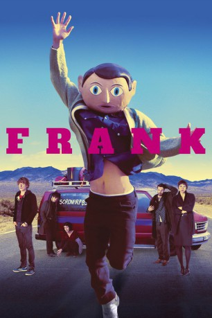
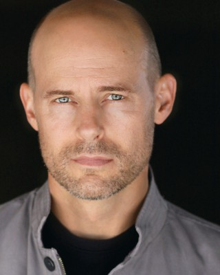
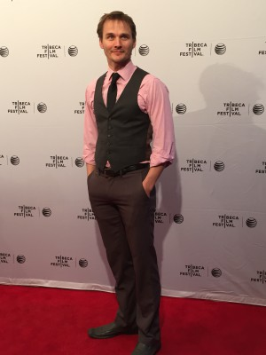

#2311 Frank
 
 IMDB-Wertung: 7.0 / 10
IMDB-Wertung: 7.0 / 10  Metascore: 75
Metascore: 75 
Frank gibt in der Band Soronprfbs den Ton an. Er ist sprichwörtlich der Kopf dieser experimentellen Band. Nicht nur bei den Live-Shows trägt der exzentrische Bandleader einen überdimensionalen Pappmaschee-Kopf und jeder glaubt, er hat immense psychische Probleme. Als der junge, veträumte Jon Franks Band beitritt, muss er erst noch lernen, auf was er sich da genau eingelassen hat. Jon soll für den ausgefallenen Keyboarder einspringen. Der erste gemeinsame Auftritt wird ein Desaster, doch Doug, der Manager, lässt Jon trotzdem in der Band. Als die Band nach Irland reist, um ein neues Album aufzunehmen, geht das absurde Abenteuer erst richtig los.
Jahr: 2014
Dauer: 95 Minuten
FSK: 12
Land: England Studio: Weltkino FilmverleihTonspuren: DTS - ,
Untertitel: Deutsch,
Auflösung: 1080p (1920x808) Größe: 4147 MB
Genre: Komödie, Drama, Musik
Regisseur: Lenny Abrahamson
Drehbuch: Jon Ronson, Peter Straughan, Jon Ronson
Soundtrack: Stephen Rennicks
Darsteller:
 Domhnall Gleeson als Jon Burroughs
Domhnall Gleeson als Jon Burroughs- Moira Brooker als Jon's Mother
- Paul Butterworth als Jon's Father
- Phil Kingston als Radio DJ
 Scoot McNairy als Don
Scoot McNairy als Don Maggie Gyllenhaal als Clara
Maggie Gyllenhaal als Clara François Civil als Baraque
François Civil als Baraque- Carla Azar als Nana
 Michael Fassbender als Frank
Michael Fassbender als Frank Mark Huberman als Management Guru
Mark Huberman als Management Guru- Laura-Love Tode als Passerby Austin 2
- Hayley Derryberry als Simone
 Lauren Poole als Alice
Lauren Poole als Alice- Jordyn Aurora Aquino als Hipster Girl
- Katie Anne Mitchell als Interview Girl
- Paul Howard Smith als Man in Cowboy Hat
 Matthew Page als Passerby in Alleyway
Matthew Page als Passerby in Alleyway Alex Knight als SXSW Driver
Alex Knight als SXSW Driver- Abe Martell als Stage Manager
-  Morse Bicknell als Driver
- Dean Satriano als Young Man in Chinese Restaurant
 Kevin Wiggins als Hillbilly
Kevin Wiggins als Hillbilly-  Travis Hammer als Tree Surgeon
 Tess Harper als Frank's Mom
Tess Harper als Frank's Mom- Bruce McIntosh als Frank's Dad
- Andy Brooks als Roadie , uncredited
- Stephen M. Hardin als SXSW Crowd Person , uncredited
- Kelly V. Lucio als SXSW Concert Attendee , uncredited
- Robb Moon als Elliptical Bike Rider , uncredited
- Philip David Pickard als Doorman , uncredited
- J.B. Tuttle als Nice Passerby , uncredited
- Billie Traynor als Cafe Lady
- Shane O'Brien als Lucas
- Chris McHallem als Paramedic
- Michael James Ford als Port Official
- Rosalind Adler als German Mother
- Niall Glennon als German Father
- Torsten Brescanu als German Child
- Leroy Harris als Grocery Boy
- Noah Hauser als Passerby Austin 1
- Peter Trinh als Chinese Restaurant Waiter
- Derek Blakeney als Bar Bouncer , uncredited
- Jeremie Dalaba als Security Guard , uncredited
- Jean Effron als Old Woman , uncredited
- Jessica Stotz Harrell als Festival Patron , uncredited
- Darlene Kellum als Patron , uncredited
- Rodger Larance als Hotel Guest , uncredited
- Beth Lucero als Bar Patron / Hipster / Festival Patron , uncredited
- Estevan Lucero als Club Bouncer , uncredited
- Crystal Miller als Hipster , uncredited
Datei: X:\2014(A-F)\Frank (2014, FSK12, 1920x808).mkv seit 28.10.2015
Festplatte: HD 2013(I-Z)-2014(A-Z)
 Es gibt insgesamt 119 Filme in der Gruppe '2014(A-F)'
Es gibt insgesamt 119 Filme in der Gruppe '2014(A-F)'